Cocos2d-x 开发 Windows 7 Android 平台环境搭建
Android 平台工程创建
1. Android SDK+NDK 安装
1) 安装 java jdk （如果已经安装好了，跳过此步）
进入 Java SE Download Page下载 jdk7u9 根据系统是32位还是64位选择 x86 或者 x64。
安装后，配置环境变量：
新建环境变量：JAVA_HOME 值为：D:\Program Files\Java\jdk1.7.0
新建环境变量：CLASSPATH 值为：.;%JAVA_HOME%\lib;（注意：点号表示当前目录，不能省略）
在系统变量Path的值的前面加入以下内容：%JAVA_HOME%\bin;(注意:这里的分号不能省略)到这里，JDK安装完毕。
单击“开始”—>“运行”—>输入：cmd命令，在CMD窗口中输入：java -version
出现如下界面，就表示安装成功：
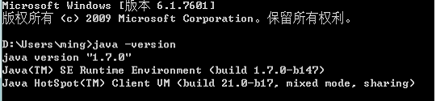
2) 下载eclipse
进入以下页面：
http://www.eclipse.org/downloads/packages/
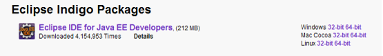
根据自己的系统选择下载，解压后直接打开即可。
3) 安装android sdk和NDK
进入以下页面http://developer.android.com/sdk/index.html
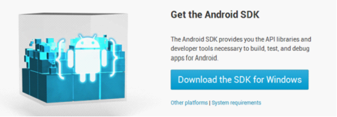
或直接复制此地址下载：http://dl.google.com/android/installer_r21-windows.exe
打开installer_r21-windows.exe
安装时会检查jdk安装情况，如果没安装成功会失败的。
然后运行SDK Manager.exe 进行更新sdk（建议根据需要下载对应版本的sdk）。
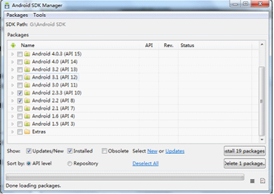
点解install packages。完成后，为了方便，也配置下环境变量
新建环境变量：ANDROID_SDK 值为：G:\Android SDK\platforms;G:\Android SDK\tools（这个是SDK存放的位置）
在系统PATH环境变量种加入：%ANDROID_SDK%
单击“开始”—>“运行”—>输入：cmd命令，在CMD窗口中输入：adb -h
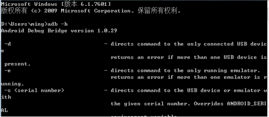
进入http://developer.android.com/tools/sdk/ndk/index.html 或点击直接下载
下载解压到E:\android-ndk-r8
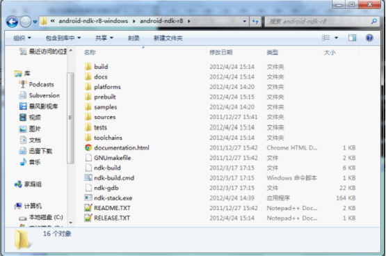
Android NDK包含build、docs、samples、sources、GNUmakefile、ndk-build、ndk-gdb及readme等内容。
2. Cygwin安装
由于NDK开发大都涉及到C/C++在GCC环境下编译、运行，所以在Windows环境下，需要模拟Linux模拟编译环境，下载地址：
下载后是个setup.exe文件，使用过程如下：
第一步：运行setup程序，第一步图略，直接点击Next进入下一步。
第二步：选择安装方式，第一次可以采用Direct Connection在线下载安装，如有现成的离线包，可以选择离线安装（Install from Local Directory）。
第三步：选择安装目录，比如C:\Cygwin，注意此目录是指Cygwin最终的安装目录，不是下载文件暂存目录。
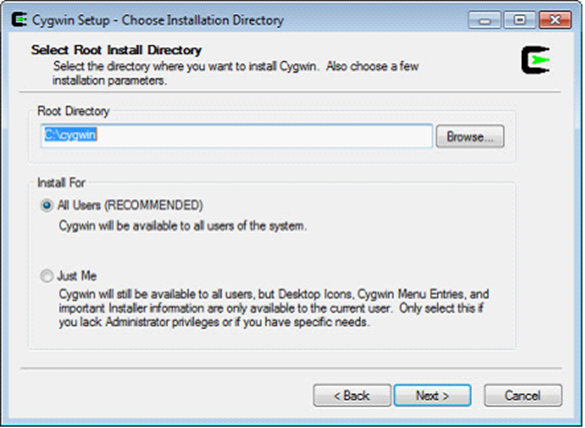
第四步：设置本地包暂存路径
暂存目录默认是放到setup.exe的同级目录下，下载后名字类似ftp%3a%2f%2fcygwin.mirrors.pair.com%2f这样格式。
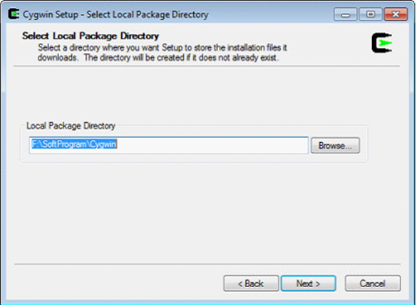
第五步：设置网络连接方式
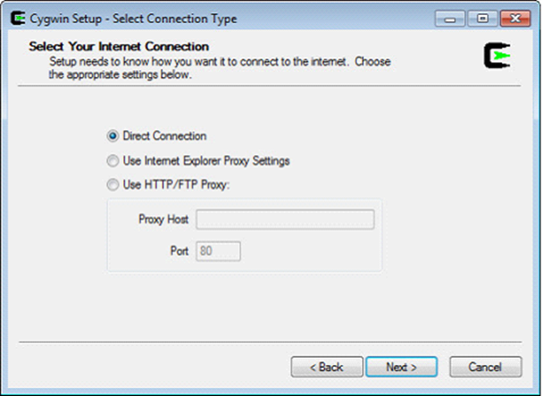
第六步：选择下载站点地址
起初尝试几个看哪个速度快就用哪个地址（如果感觉不快就点取消，再次来过）。
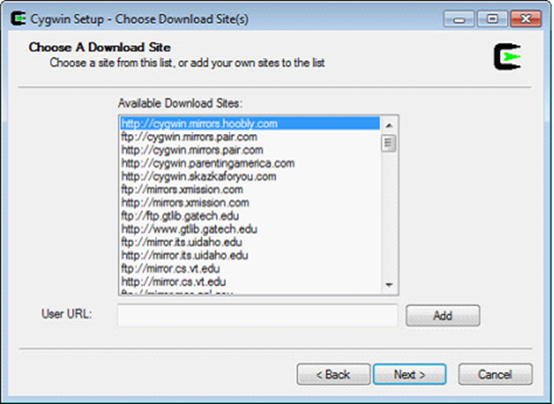
第七步：等待加载安装项载入，选择安装项
我们编译NDK，在默认设置下，只需选择Devel（点击列表中Devel，将后面的Default改为Install，图中箭头所示），其它均为默认状态。(其实NDK需要的不多，主要autoconf2.1、automake1.10、binutils、gcc-core、gcc- , g++、gcc4-core、gcc4-g++、gdb、pcre、pcre-devel、gawk、make )
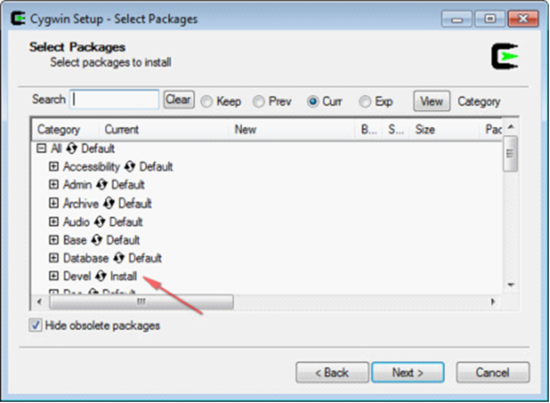
第八步：等待下载完成
下载完成时间决定于你选择的安装包数量及网络连接速度，比如按照本文默认的选择方式，可能需要2-3个小时（视网速而定），下载后压缩包约1.2G，下载完成后会自动安装到上文设置的安装目录。
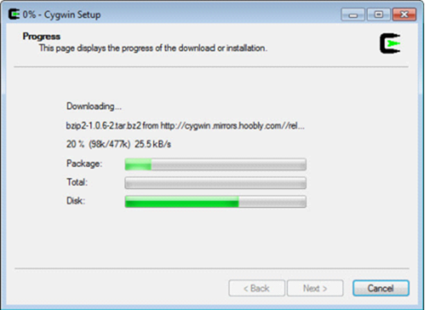
提醒：第一次下载完成后，最好把下载的包目录做个备份，下次安装同样的环境可以直接使用离线安装方式（第二步中选择本地安装）。
运行cygwin，在弹出的命令行窗口输入：cygcheck -c cygwin命令，会打印出当前cygwin的版本和运行状态，如果status是ok的话，则cygwin运行正常。
然后依次输入gcc –v，g++ --version，make –version，gdb –version进行测试，(注意空格和-)如果都打印出版本信息和一些描述信息，这说明cygwin安装成功了。
3. 安装ADT和配置Cygwin
1) 安装android 开发插件
(1)打开Eclipse, 在菜单栏上选择 help->Install New SoftWare 出现如下界面:
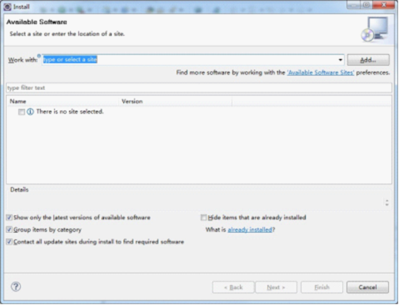
点击 Add按钮,出现如下界面
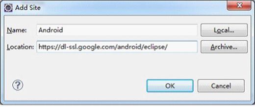
输入网址: https://dl-ssl.google.com/android/eclipse/ (如果出错，请将https改成http)
名称: Android (这里可以自定义)
点击OK，将出现如下界面
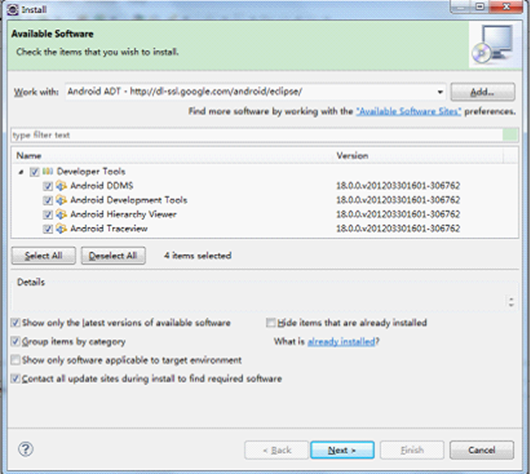
全部选中。
点击 Next按钮 ，出现如下界面:
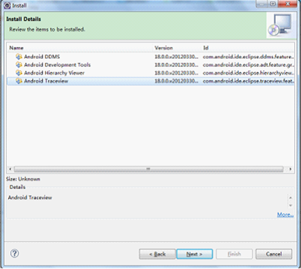
点击Next按钮，出现如下界面:
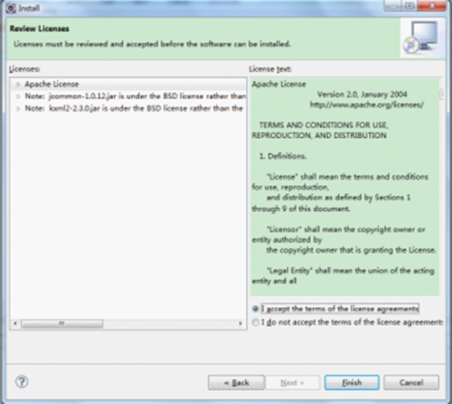
选择 I accept the terms of the license agreements 点击Next,进入安装插件界面
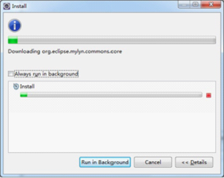
安装完成后，出现如下界面
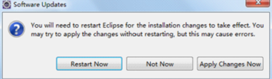
点击Yes按钮，重启Eclipse。
点击菜单window->preferences,进入如下界面：
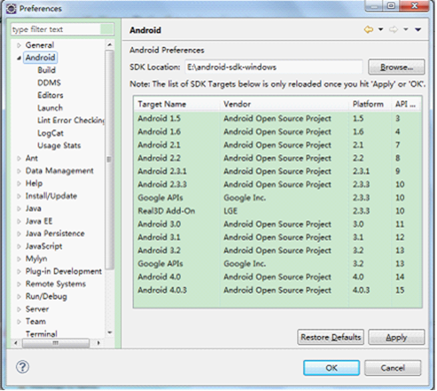
选择你的android SDK解压后的目录(ADT 18 默认会扫描你的电脑，找到并配置好SDK位置)。
如果没安装好SDK的，也可以在eclipse中选择菜单 window->Android sdk and avd manager 出现如下界面：
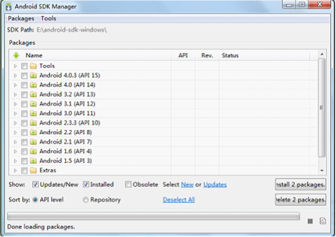
也可以选择你需要的版本的sdk。
新建AVD(android vitural device)和上面一样，进入android sdk and avd manager,选中Vitural Devices 在点击New按钮
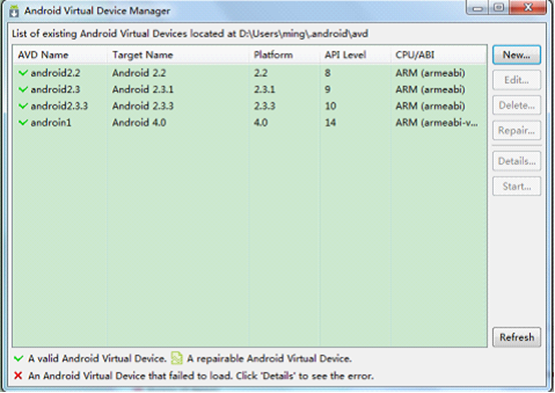
点击New按钮后，进入如下界面:
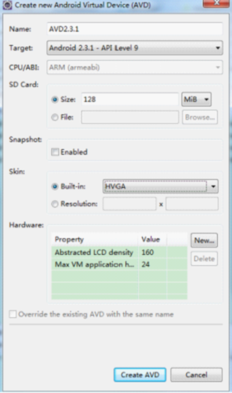
名称可以随便取，target选择你需要的SDK版本，SD卡大小自定义,点击 Create AVD便成功创建。
配置cygwin
在命令行中进入cygwin目录，并执行cygwin.bat，如果你不是用Administrator账号登录的系统，那么会在cygwin\home\文件夹中生成一个以你的登录名命名的新的文件夹。
修改新生成文件夹中的“.bash_profile ”文件，用UE或editplus等文本编辑器打开，在最后增加： （e/android-ndk-r8-windows/android-ndk-r8是安装ndk的路径）
NDK_ROOT=/cygdrive/e/android-ndk-r8-windows/android-ndk-r8
export NDK_ROOT
然后保存关闭。
至此我们便基本搭建完毕cocos2d-x的windows 7 android 环境，下一节我们将开始创建cocos2d-x android平台的hello world工程。
4. 创建Android工程
- 修改Cocos2D安装目录下的“create-android-project.bat”文件。将_CYGBIN、_ANDROIDTOOLS、_NDKROOT三个分别设置成Cygwin的bin目录（c:\cygwin\bin）、Android SDK的tools目录（C:\Users\Andy\AppData\Local\Android\android-sdk\tools）、NDK根目录（E:\cocos2d-x\android-ndk-r8b）。
- 运行“create-android-project.bat”生成android工程，依次按要求输入，最终在Cocos2D的根目录下会产生所输入的项目名目录，例如“HelloWorld”。
- 用Cygwin客户端进入HelloWorld下的proj.android目录，运行build_native.sh，如果提示没有定义NDK_ROOT的话，可以在Windows的环境变量里面设置（网上有人说这里需要的是linux环境下的变量，在windows里面定义没用，事实是可以，试了一些其他的方法都没有用，可能和我下载都是最新版本的包有关系）。没有错误的话，最后剩下的就是用Eclipse编译Java部分的代码
- Eclipse > File > New > Project > Android Project From Existing Code，选择HelloWorld下的proj.android路径。然后选择项目，选择Run As > Android Application。
- 如果有编译错误提示无法识别cocos2dx，可以Properties > Java Build path > Link Source，选择E:\cocos2d-x\cocos2d-2.0-x-2.0.4\cocos2dx\platform\android\java\src路径，Name不与src冲突即可。
- 运行成功的话弹出HelloWorld界面。我在模拟器运行一直出错，后来发现是模拟器不支持gles2.0导致的，用真机没有问题。
5.